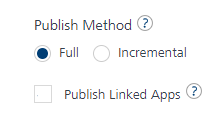
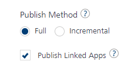

Managing Linked Apps in a Composite Foundry App
VoltMX Foundry supports Manage Linked Apps (app modularity) feature that allows linking one ore more Foundry apps into another Foundry apps - composite apps. The services of the linked apps will be accessible to the client applications mapped to the composite app.
Micro-apps and Composite apps are all Foundry apps with certain conditions as follows:
-
Micro-App (linked app): A micro-app is a regular Foundry app fulfilling a single module of a feature. A micro-app should be able to work as an independent app, for example, a Iris application can link to the micro-app. Each micro-app is capable of serving a specified business domain or functionality.
-
Composite App (parent app): A composite app is a regular Foundry app, with additional information about a list of other Foundry apps that are linked to it. It allows multiple micro-apps to be added and removed from them.
Note: Currently only 1 level of app linkage is allowed. This implies that micro-apps can be linked into composite apps, but a composite app (containing a linked micro-app) cannot be linked into another composite app.
The Manage Linked Apps feature helps to improve the Foundry app development aspects as follows:
App Modularity
Use case: When partners build vertical-based solutions like Infinity, the Client and Foundry applications are currently shared with customers. Customers can make changes to the application to meet their business requirements. When Infinity releases a new version, customers are expected to upgrade to the new version. For example, Accounts, Loans, Credit cards, and Wealth Management. The app can contain updated services, which are useful for customers, and the non-impacted services may not be relevant. This results in time-consuming because users have to take updates even if they do not use the feature.
Using the Managing Linked Apps functionality (modularity) allows you to link Foundry apps.
You need to break down the Infinity project into small Foundry apps. You can group each functionally as a Foundry app (called micro-app). You can then link the required apps to form a functional custom composite app. The service doc of a Composite app reflects the services of composite app + dependent micro-apps. For example, services of linked micro-apps can now be invoked via the App key/secret of a composite app. Customers can choose to upgrade to a certain module if they want to do so.
How Authentication Works in a Composite App
Identity providers of a composite app and its linked apps can be used by the composite app to log in and to access protected services belonging to both the composite app and linked apps.
For example,
- A composite app has Salesforce log in details
- Linked app_1 has configured with Google identity provider
- Linked app_2 has configured with Facebook identity provider
In this case, the Composite Foundry app can use any of its own providers (Salesforce) or its linked app providers (Google and Facebook) for logging and accessing its own protected services or the protected services of its linked apps.
How to Create Composite Apps in Foundry Console
The following sections will help you on how to link apps to a Foundry app and publish the app using Foundry Console:
Linking and Unlinking Apps to a Composite Foundry App
Multiple micro apps can be linked or unlinked from a composite app using the Manage Linked Apps page. Composite Foundry apps allow the services from the linked apps as well accessible to the client applications using the app key and secret of the composite app.
To link a Foundry app to another Foundry app, follow these steps:
- Log in to the Foundry Console.
-
In the Apps page, hover your cursor over the App menu button of the app and then click Manage Linked Apps.
Note: You can access the Manage Linked Apps option within the app when the app is selected.
-
In the Manage Linked Apps page that appears.
Note: You can link new apps to the selected composite Foundry app by clicking the Add button on the Manage Linked Apps page.
You can navigate to the composite app by clicking theSelected:<CurrentParentAppName>in the Manage Linked Apps page. -
In the Manage Linked Apps page, do the following:
-
To link apps, click Add button. The Existing Apps dialog appears with a list of existing apps.
- Select the check box for the required app/s and the version.
- Click LINK.
- In the Linked Apps dialog that appears with the apps linked status, click CLOSE.
All the linked apps are displayed on the Manage Linked Apps page
Note: After apps are linked to a Foundry app, you can unlink the linked apps or navigate to the linked apps using the Manage Linked Apps page.
- To unlink the linked apps:
- Select the check box for the required app/s and version.
- Click Unlink.
- In the Unlink Linked Apps dialog that appears with the apps linked status, click CLOSE.
- To navigate to the linked apps, click on any of the linked apps from the list. The selected app will be opened.
The following sections detail how to publish a composite app and linked apps.
-
{kind=link}
{kind=link}
{kind=link}
{kind=link}
Publishing a Foundry Composite App
- Case 1: First publish of a composite app or the first publish after unpublish the app
- Case 2: Publish Linked Apps is not selected
- Case 3: Publish Linked Apps is selected
- Full or Incremental Publish behavior for Composite App and Linked Apps
Case 1: First publish of a composite app or the first publish after unpublish the app.
By default, all linked apps will be published while publishing the composite app.
- Navigate to your composite app in Foundry Console.
- Click Publish tab.
- Select an environment.
- Click PUBLISH.
The following table details a sample composite app and linked apps, and the results of the direct publishing of the composite app:
| Sample Composite Foundry App has linked apps with versions | Results of direct publish a composite app and linked apps for the first time |
|---|---|
|
CompositeApp V1.0
|
The entire composite app and linked apps are published for full app publish whenever direct publish is performed for the composite app. For example: |
Important: Unpublish of a composite app does not result in the unpublish of linked apps. If you want to unpublish linked apps, you need to unpublish each of them independently.
Case 2: Publish Linked Apps is not selected
After the first publish, the publish checks if each linked app has already been published, and if not, those specific linked apps will be included for publish along with composite app. The linked apps which are missing publish can be due to new app linkage or existing linked app independently is unpublished.
- Navigate to your composite app in Foundry Console.
- Click Publish tab.
- Select an environment.
- Click CONFIGURE & PUBLISH.
-
Clear the Publish Linked Apps check box to not to include linked apps for publishing.

-
Click SAVE & PUBLISH.
The following table details a sample composite and linked apps, and the results of the publishing composite app without linked apps:
| Sample Composite Foundry App has been modified as follows: | Results when Publish Linked Apps is not selected |
|---|---|
|
CompositeApp V1.0 (previously published)
|
|
Case 3: Publish Linked Apps is selected
In this case, publish operation publishes the composite app along with all linked apps. This helps include any changes to the linked apps post the initial publish.
- Navigate to your composite app in Foundry Console.
- Click Publish tab.
- Select an environment.
- Click PUBLISH.
- In the App Configuration > Publish Method select Full or Incremental for the composite app.
-
Select the Publish Linked Apps check box to include linked apps for publishing.

-
Click SAVE & PUBLISH.
The following table details a sample composite and linked apps, and the results of the composite app publishing with linked apps:
| Sample Composite Foundry App has been modified as follows: | Results when Publish Linked Apps is selected |
|---|---|
|
CompositeApp V1.0 (previously published)
|
|
Full or Incremental Publish behavior for Composite App and Linked Apps
During app publishing, Volt MX Foundry allows you to reconfigure certain default values of app prior to publishing.
{kind=link}
Important: Publish Method > Incremental Publish (Delta Publish). The option selected by the respective app is only applied when publishing a particular composite or linked app. A Composite app’s option does not impact a linked app’s delta publish behavior.
Important: Only when the Publish Method is set to Incremental in the linked app (micro1), the micro1 app is published for delta publish while publishing the composite app.
MFCLI Commands for Publishing Composite Apps
--publishMicroApps parameter for MFCLI Publish Composite Apps
From V9SP3, Publish command will now accept an additional parameter called ‘publishMicroApps’. If you specify the parameter in the Publish command, it will publish all dependent micro apps as well.
MFCLI Command to publish a composite app along with dependent linked apps
--publishMicroApps:
-
to publish dependent linked apps as well, specify the additional parameter in the MFCLI Publish command:
java -jar mfcli.jar publish -a <appName> -e <envName> --publishMicroApps -
to publish only the composite app without dependent linked apps, do not specify the parameter in the MFCLI Publish command:
java -jar mfcli.jar publish -a <appName> -e <envName>
-mfConsoleVersion Parameter for MFCLI Publish Foundry Console Version
From V9SP3GA, the MFCLI Publish command accepts an additional parameter called ‘mfConsoleVersion’. This console version needs to be specified for older Foundry versions. This param has bee added to support the backward compatibility.
MFCLI Command to Publish Foundry Console version from V9SP3 GA
mfConsoleVersion
-
To publish apps to Foundry Cloud V9.3.0.0. or higher:
java -jar mfcli.jar publish -a <appName> -e <envName> --mfConsoleVersion 9.3.0.0
Note: This is an optional parameter in case you are using the same Foundry version with matching mfcli.jar version. In this case, if the parameter is not specified, the publish command considers your current mfcli jar release version for publishing. -
if the Foundry version and the mfcli.jar version are not the same, you need to specify this parameter indicating which Foundry version the publish is being done to for the publish to be successful. Otherwise, the publish fails. For example, if you are using Foundry V9.2 or lower and mfcli.jar V9.3 or higher, you need to specify as shown below:
java -jar mfcli.jar publish -a <appName> -e <envName> --mfConsoleVersion 9.2.0.0
--IncludChildApps Parameter for MFCLI object-services-meta command
From V9SP3, the Object services meta command will now accept an additional parameter called ‘includeChildApps’. If you specify the parameter in object-services-meta command, it will list the object services of the composite app and the linked apps.
MFCLI Command to get object service meta for acomposite app with linked apps
--includeChildApps:
-
To get an object service meta for a composite app with linked apps, specify the flag as below:
java -jar mfcli.jar object-services-meta -a <app name> [-v <app version>] -e <environment name> --includeChildApps -
to get an object service meta data of a composite app without dependent linked apps, do not specify the parameter in the MFCLI Publish command:
java -jar mfcli.jar object-services-meta -a <app name> [-v <app version>] -e <environment name> -
For more information on MFCLI commands, refer to Continuous Integration with Volt MX Foundry.
-
For more information on how to import and link a composite app in a Volt MX Iris project, refer to Micro Applications in Volt MX Iris.